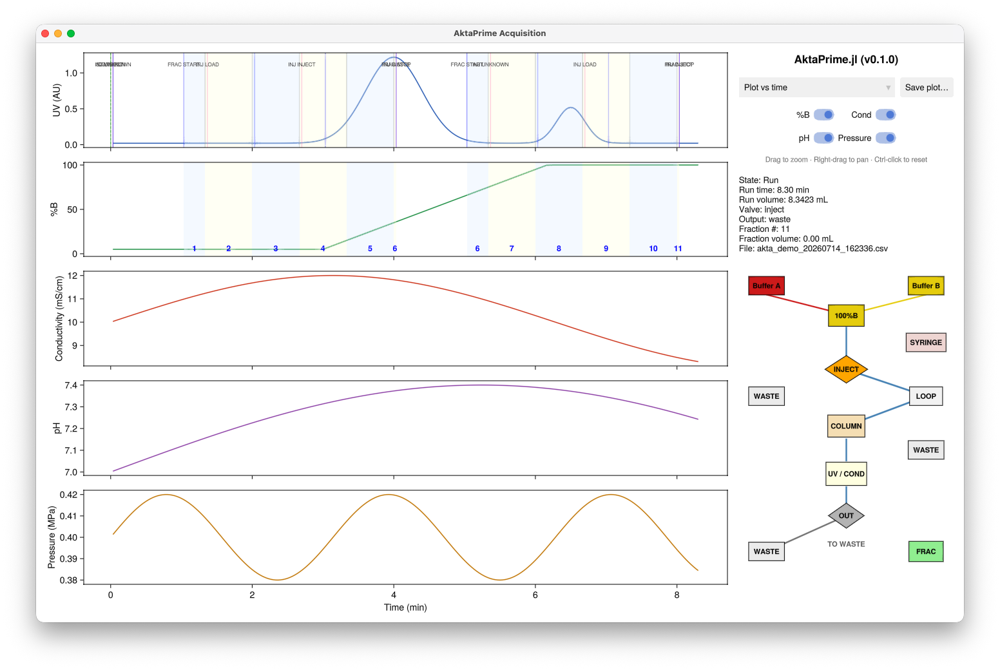

AktaPrime.jl
Open-source control and data logging for the GE/Cytiva ÄKTA Prime plus FPLC.
AktaPrime.jl is a free replacement for the discontinued PrimeView software. It connects to an ÄKTA Prime over the instrument's serial (RS-232) link and gives you a live chromatogram, event and fraction tracking, and a plain-text log of every run — so an instrument whose original control PC has failed, or which was bought second-hand without usable software, can be brought back into service on any ordinary laptop.

What it does
- Live monitoring of UV, conductivity, pH, gradient %B and pressure, with a shared time or volume axis.
- Event and fraction tracking — injection-valve moves, run-state changes and fraction-collection spans are drawn straight onto the chromatogram.
- Automatic per-run logging — every run is written to its own timestamped CSV file, so runs never overwrite or overlap one another.
- A live flow-path schematic showing where liquid is currently being routed.
- Replay and figure export — reopen any saved log to review it, and export the plot to PDF for reports and publications.
- Demo mode — explore the whole interface with simulated data, no instrument required.
Getting started
- Install Julia and the app, and connect your instrument.
- Start an acquisition.
- View and export your results.
No instrument to hand? Try demo mode first.